Patient complaints provide essential feedback about healthcare service quality, but analyzing complaint data can be challenging because many patients report no complaints at all. To better understand this data, a specialized statistical approach called a Zero-Inflated Negative Binomial (ZINB) model is required.
df <- read.table('../data/compdat.txt', header = TRUE, sep = "\t", stringsAsFactors = FALSE)summary(df)## visits complaints residency gender
## Min. : 879 Min. : 0.000 Length:94 Length:94
## 1st Qu.:1698 1st Qu.: 0.000 Class :character Class :character
## Median :2299 Median : 0.000 Mode :character Mode :character
## Mean :2271 Mean : 1.564
## 3rd Qu.:2776 3rd Qu.: 2.000
## Max. :3763 Max. :11.000
## revenue hours
## Min. :203.9 Min. : 589
## 1st Qu.:243.8 1st Qu.:1201
## Median :263.7 Median :1494
## Mean :263.8 Mean :1469
## 3rd Qu.:288.0 3rd Qu.:1700
## Max. :342.9 Max. :2269str(df)## 'data.frame': 94 obs. of 6 variables:
## $ visits : int 2014 3091 879 1780 3646 2690 1864 2782 3071 1502 ...
## $ complaints: int 2 3 1 1 11 1 2 6 9 3 ...
## $ residency : chr "Y" "N" "Y" "N" ...
## $ gender : chr "F" "M" "M" "M" ...
## $ revenue : num 263 335 206 226 289 ...
## $ hours : num 1287 1588 705 1006 1667 ...# Converting categorical variables to factors
df$residency <- as.factor(df$residency)
df$gender <- as.factor(df$gender)
# Keeping rows where visits and complaints are 0 or positive (removing negative values)
df <- df[df$visits >= 0 & df$complaints >= 0, ]# Examining count variable complaints
table(df$gender, df$complaints)##
## 0 1 2 3 4 5 6 7 8 9 10 11
## F 25 5 3 2 0 1 0 0 0 1 0 0
## M 26 7 9 3 1 3 2 2 2 0 1 1table(df$residency, df$complaints)##
## 0 1 2 3 4 5 6 7 8 9 10 11
## N 26 5 6 1 1 3 1 2 2 1 0 1
## Y 25 7 6 4 0 1 1 0 0 0 1 0hist(df$complaints, main = "Histogram of Complaints")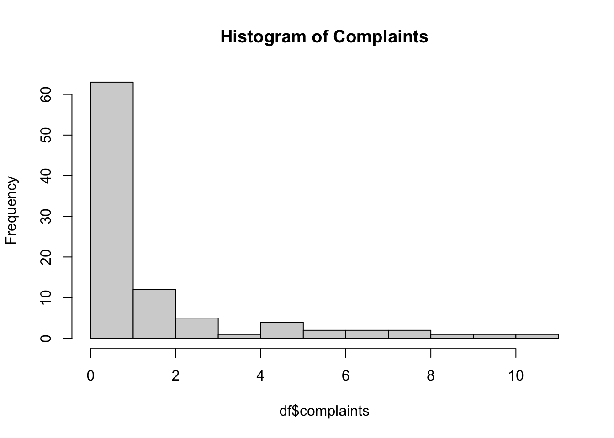
library(lattice)
histogram(~complaints | gender*residency, df, breaks = 0:12 - 0.5, main = "Histogram of complaints by Gender and Residency", xlab = "Complaints", ylab = "Frequency")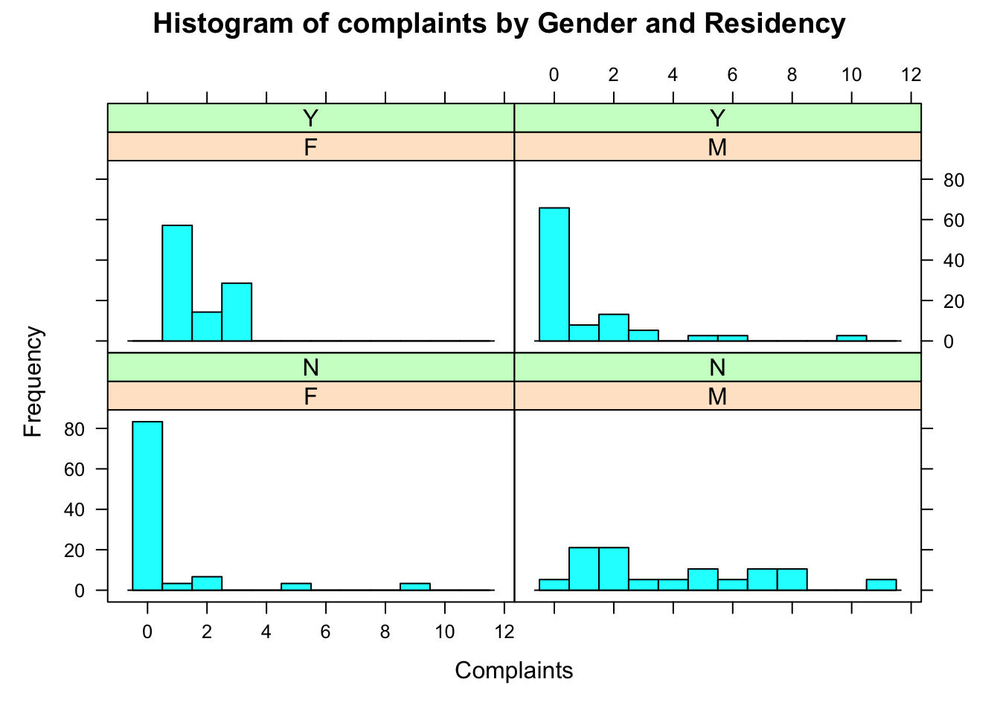
The histogram reveals a high number of zeros in the dataset, indicating potential zero inflation; where there are more zeros than expected under a standard Poisson model. Additionally, the distribution is heavily right-skewed, suggesting overdispersion, meaning that a Poisson model may not be suitable. To confirm overdispersion, we should compare the variance and mean of the complaints variable.
# Calculate mean and variance of complaints
mean_complaints <- mean(df$complaints)
var_complaints <- var(df$complaints)
# Check for overdispersion
overdispersion <- var_complaints > mean_complaints
print(paste("Mean:", mean_complaints, "Variance:", var_complaints))## [1] "Mean: 1.56382978723404 Variance: 6.35609700297416"We can see that the variance is much larger than the mean, which confirms the presence of overdispersion. This means the data is more spread out than what a standard Poisson model would expect.
library(AER)
poisson_model <- glm(complaints ~ gender + residency, family = poisson, data = df)
dispersiontest(poisson_model)##
## Overdispersion test
##
## data: poisson_model
## z = 2.9138, p-value = 0.001785
## alternative hypothesis: true dispersion is greater than 1
## sample estimates:
## dispersion
## 3.475724To further confirm overdispersion, we use a dispersion test from the AER package. The p-value from the test is 0.001785, which is very small (anything below 0.05 is considered significant). This provides strong evidence that the Poisson model isn’t a good fit suggesting the use of a Negative Binomial model.
A poisson model assumes that the probability of a zero count is: \[P(Y = 0) = e^{-\lambda}\]
To confirm the presence of zero inflation, we compare the observed number of zeros in our data to the expected number (\(\lambda\)) under a Poisson model, which is used for modeling count data.
# Calculate the observed proportion of zero complaints
observed_zeros <- sum(df$complaints == 0) / nrow(df)
# Mean complaints
lambda_hat <- mean(df$complaints)
# Expected proportion of zeros under Poisson distribution
expected_zeros <- exp(-lambda_hat)
print(paste("Observed proportion of zeros:", round(observed_zeros, digits = 4)))## [1] "Observed proportion of zeros: 0.5426"print(paste("Expected proportion of zeros of Poisson model:", round(expected_zeros, digits = 4)))## [1] "Expected proportion of zeros of Poisson model: 0.2093"The results show that 54.3% of the data consists of zeros, while the Poisson model only expects about 20.9%. This confirms zero inflation, suggesting a Zero-Inflated Poisson model may be needed.
boxplot(df$complaints~df$residency, xlab="Residency", ylab="Number of Complaints")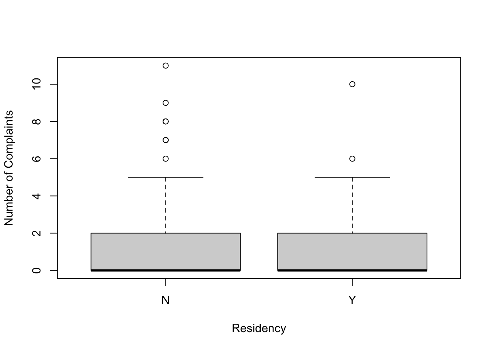
boxplot(df$complaints~df$gender, xlab="Gender", ylab="Number of Complaints")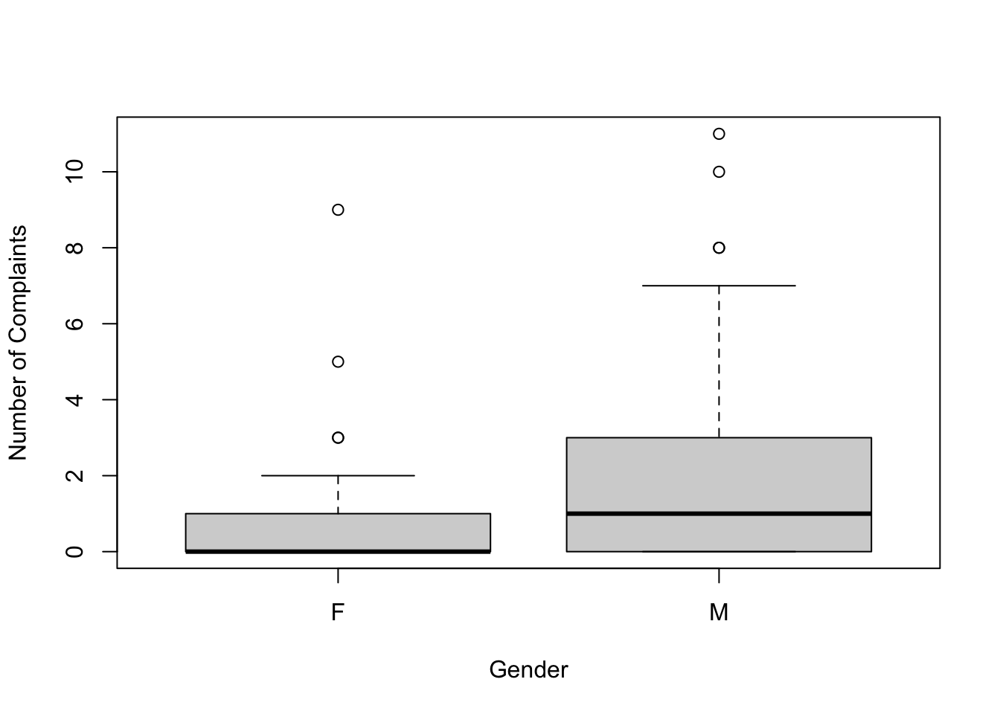
The number of complaints appears to be similarly distributed between doctors in residency training and those not in training. However, the box plot reveals that male doctors receive more complaints compared to female doctors. To further support this conclusion, we use the Wilcoxon test (median based) to check for differences in distribution and the t-test to determine if the means differ significantly.
wilcox.test(df$complaints ~ df$gender)##
## Wilcoxon rank sum test with continuity correction
##
## data: df$complaints by df$gender
## W = 774.5, p-value = 0.01799
## alternative hypothesis: true location shift is not equal to 0The p-value of 0.01799 is less than 0.05, so we have enough evidence to say that the number of complaints is significantly different between male and female doctors.
t.test(df$complaints ~ df$gender, var.equal = FALSE)##
## Welch Two Sample t-test
##
## data: df$complaints by df$gender
## t = -2.5216, df = 91.974, p-value = 0.0134
## alternative hypothesis: true difference in means between group F and group M is not equal to 0
## 95 percent confidence interval:
## -2.1402417 -0.2542581
## sample estimates:
## mean in group F mean in group M
## 0.8378378 2.0350877The p-value of 0.0134 is also less than 0.05, meaning there is a clear difference in the average number of complaints between male and female doctors. The confidence interval [-2.14, -0.25] does not include 0, which further confirms the difference.
hist(df$visits, main = "Histogram of visits" )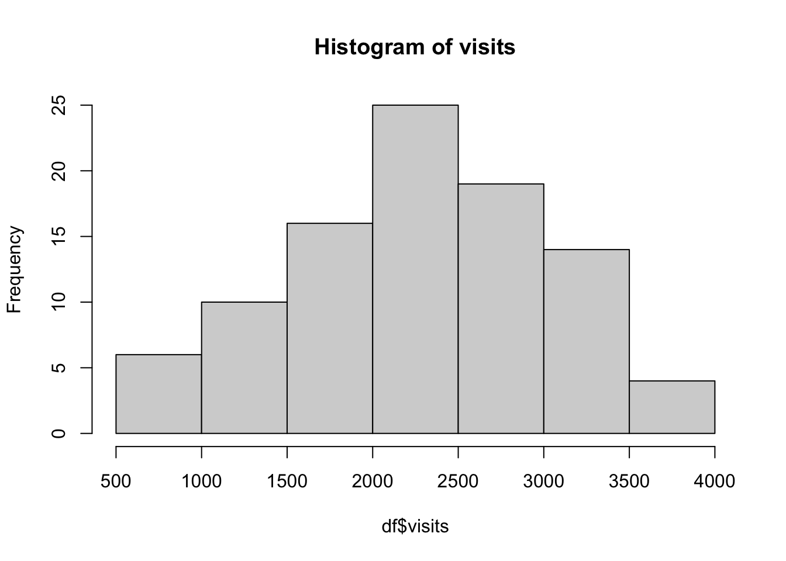
hist(df$revenue, main = "Histogram of revenue" )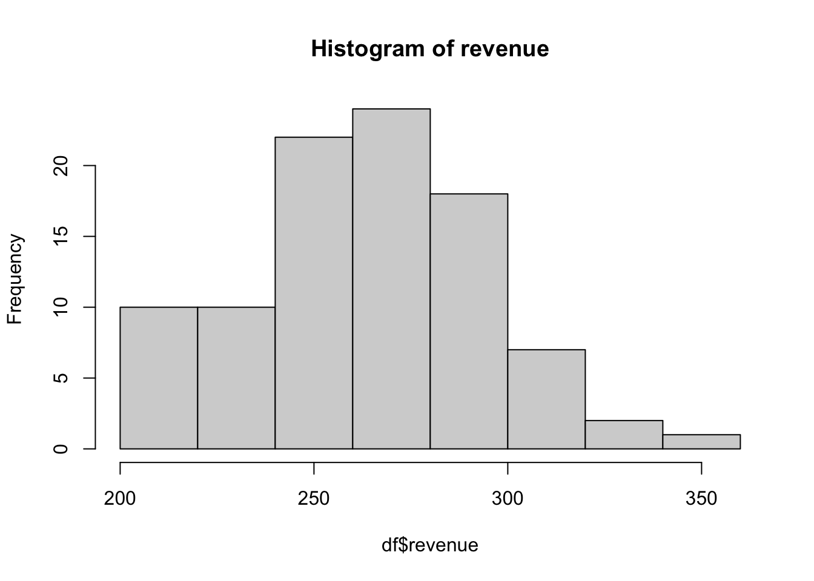
hist(df$hours, main = "Histogram of hours" )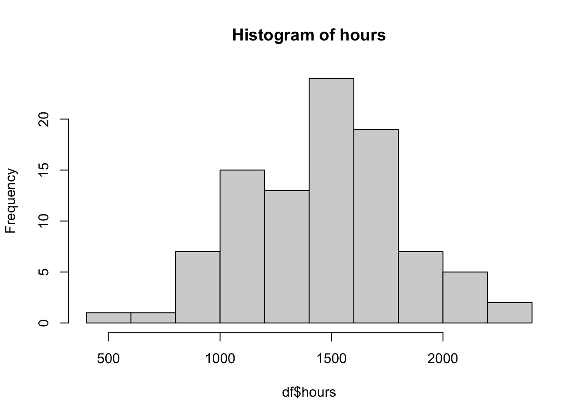
The histograms of the continuous variables show only slight skewness, so applying a log transformation is not necessary.
plot(log(df$complaints + 1) ~ df$hours, xlab="Hours", ylab="Log(Number of Complaints + 1)")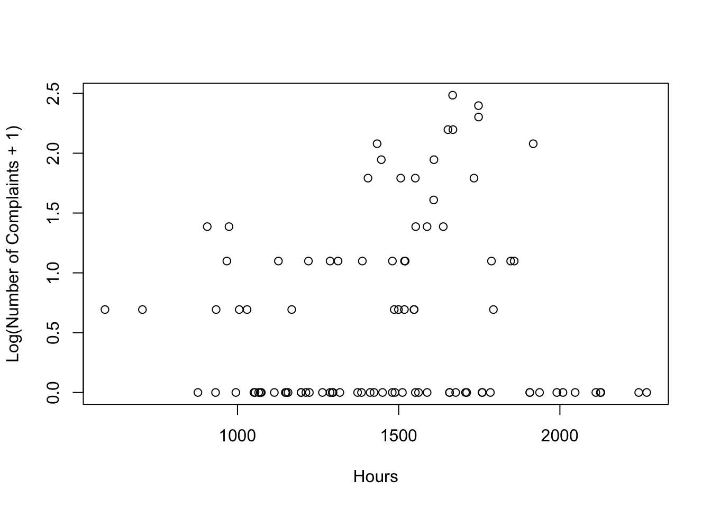
plot(log(df$complaints + 1) ~ df$visits, xlab="Visits", ylab="Log(Number of Complaints + 1)")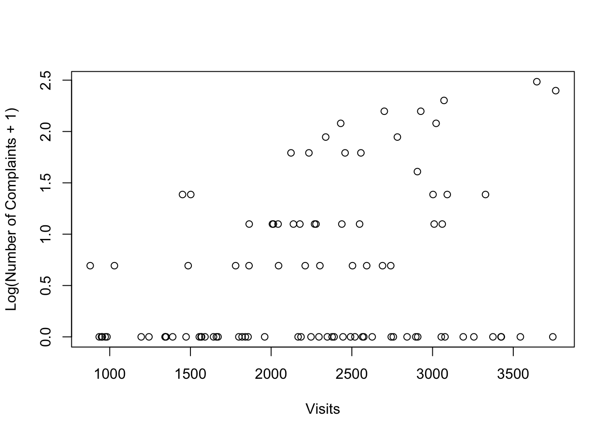
plot(log(df$complaints + 1) ~ df$revenue, xlab="Revenue", ylab="Log(Number of Complaints + 1)")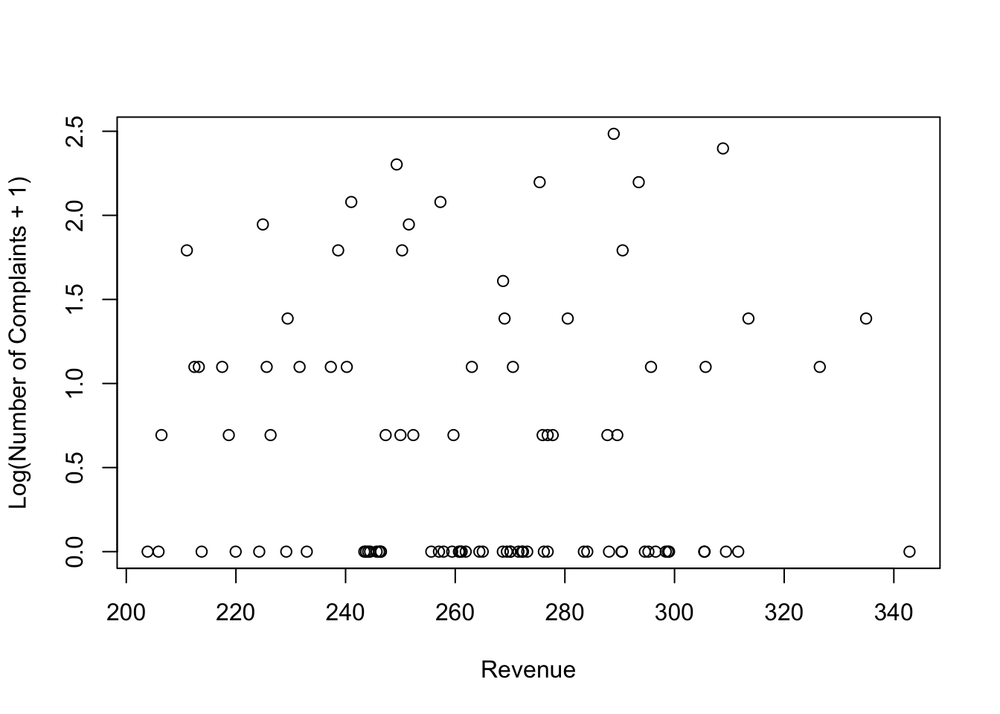
These plots visualize the relationship between hours, visits, and revenue against the log-transformed number of complaints. There seems to be a moderate positive linear relationship between visits and hours. However, the log number of complaints appears to be randomly distributed with revenue, suggesting that revenue is not a strong predictor of complaints. To further measure these relationships, we need to perform a Correlation Analysis.
Note: Since the complaints variable contains zeros, applying
log(df$complaints) would result in -Inf
values, leading to inaccurate plots. To avoid this issue, we use
log(df$complaints + 1).
cor.test(df$hours, log(df$complaints + 1))##
## Pearson's product-moment correlation
##
## data: df$hours and log(df$complaints + 1)
## t = 0.49771, df = 92, p-value = 0.6199
## alternative hypothesis: true correlation is not equal to 0
## 95 percent confidence interval:
## -0.1523968 0.2517935
## sample estimates:
## cor
## 0.05182029cor.test(df$visits, log(df$complaints + 1))##
## Pearson's product-moment correlation
##
## data: df$visits and log(df$complaints + 1)
## t = 3.0828, df = 92, p-value = 0.002707
## alternative hypothesis: true correlation is not equal to 0
## 95 percent confidence interval:
## 0.1102012 0.4789113
## sample estimates:
## cor
## 0.3059859cor.test(df$revenue, log(df$complaints + 1))##
## Pearson's product-moment correlation
##
## data: df$revenue and log(df$complaints + 1)
## t = -0.41275, df = 92, p-value = 0.6807
## alternative hypothesis: true correlation is not equal to 0
## 95 percent confidence interval:
## -0.2434887 0.1610269
## sample estimates:
## cor
## -0.0429928There is no significant relationship between hours worked and the number of complaints. The only significant predictor is visits (p = 0.0027, r = 0.31). Hours (p = 0.6199, r = 0.05) and revenue (p = 0.6807, r = -0.04) are not strong predictors.
The Variance Inflation Factor helps detect multicollinearity, which happens when predictors are too closely related. It measures how much a predictor’s variance is inflated due to correlations with other predictors. If VIF > 5, multicollinearity is a concern. If VIF > 10, it’s a serious issue which needs to be addressed.
library(car)
vif_model <- lm(complaints ~ visits + residency + gender + revenue + hours, data = df)
vif_values <- vif(vif_model)
print(vif_values)## visits residency gender revenue hours
## 1.299671 1.420006 1.321537 1.070518 1.321374The VIF values are all < 2, which means multicollinearity isn’t a concern.
Since overdispersion and zero inflation are present, neither a Negative Binomial nor a Zero-Inflated Poisson model alone is enough. Therefore, Zero-Inflated Negative Binomial is the best choice, which will allow us to understand: 1. How different factors influence the number of complaints when they do occur (the “count” part), and 2. Why some observations have no complaints at all (the “zero-inflation” part).
predictors <- c("visits", "residency", "gender", "revenue", "hours")
base_formula <- as.formula(paste("complaints ~", paste(predictors, collapse = " + "), "|", paste(predictors, collapse = " + ")))library(pscl)
zinb_base <- zeroinfl(base_formula, data = df, dist = 'negbin')
summary(zinb_base)##
## Call:
## zeroinfl(formula = base_formula, data = df, dist = "negbin")
##
## Pearson residuals:
## Min 1Q Median 3Q Max
## -1.07975 -0.65173 -0.24077 0.08785 3.31293
##
## Count model coefficients (negbin with log link):
## Estimate Std. Error z value Pr(>|z|)
## (Intercept) 3.7050283 1.4261221 2.598 0.00938 **
## visits 0.0022846 NaN NaN NaN
## residencyY -0.1785727 0.3117556 -0.573 0.56678
## genderM 0.5783319 0.3036332 1.905 0.05682 .
## revenue -0.0174033 0.0043892 -3.965 7.34e-05 ***
## hours -0.0029508 0.0007413 -3.980 6.88e-05 ***
## Log(theta) 0.5487658 NaN NaN NaN
##
## Zero-inflation model coefficients (binomial with logit link):
## Estimate Std. Error z value Pr(>|z|)
## (Intercept) 22.08077 4.43783 4.976 6.51e-07 ***
## visits 0.01180 NaN NaN NaN
## residencyY 4.56503 1.45564 3.136 0.00171 **
## genderM 0.26974 1.55676 0.173 0.86244
## revenue -0.11795 0.01141 -10.339 < 2e-16 ***
## hours -0.01931 NaN NaN NaN
## ---
## Signif. codes: 0 '***' 0.001 '**' 0.01 '*' 0.05 '.' 0.1 ' ' 1
##
## Theta = 1.7311
## Number of iterations in BFGS optimization: 52
## Log-likelihood: -127.2 on 13 DfAfter fitting the base model, we can see that the visits
predictor produced NaNs, meaning the model couldn’t estimate some
coefficients properly. This could be due to perfect separation, where
certain values of visits always lead to zero complaints,
while others always lead to non-zero complaints. Since the model
requires variation to estimate probabilities, this lack of variability
makes it difficult to compute meaningful coefficients.
df$zero_complaints <- as.numeric(df$complaints == 0)
aggregate(zero_complaints ~ visits, data = df, mean)## visits zero_complaints
## 1 879 0
## 2 935 1
## 3 949 1
## 4 954 1
## 5 972 1
## 6 983 1
## 7 1029 0
## 8 1195 1
## 9 1243 1
## 10 1343 1
## 11 1344 1
## 12 1349 1
## 13 1390 1
## 14 1451 0
## 15 1473 1
## 16 1486 0
## 17 1502 0
## 18 1555 1
## 19 1566 1
## 20 1569 1
## 21 1590 1
## 22 1643 1
## 23 1661 1
## 24 1671 1
## 25 1780 0
## 26 1800 1
## 27 1820 1
## 28 1840 1
## 29 1857 1
## 30 1863 0
## 31 1864 0
## 32 1960 1
## 33 2008 0
## 34 2014 0
## 35 2043 0
## 36 2046 0
## 37 2123 0
## 38 2138 0
## 39 2167 1
## 40 2178 0
## 41 2185 1
## 42 2211 0
## 43 2234 0
## 44 2247 1
## 45 2269 0
## 46 2278 0
## 47 2296 1
## 48 2302 0
## 49 2338 0
## 50 2348 1
## 51 2378 1
## 52 2390 1
## 53 2431 0
## 54 2438 0
## 55 2445 1
## 56 2458 0
## 57 2492 1
## 58 2504 0
## 59 2519 1
## 60 2548 0
## 61 2556 0
## 62 2566 1
## 63 2574 1
## 64 2592 0
## 65 2626 1
## 66 2690 0
## 67 2701 0
## 68 2741 0
## 69 2744 1
## 70 2757 1
## 71 2782 0
## 72 2842 1
## 73 2896 1
## 74 2906 0
## 75 2908 1
## 76 2927 0
## 77 3003 0
## 78 3010 0
## 79 3022 0
## 80 3054 1
## 81 3060 0
## 82 3071 0
## 83 3077 1
## 84 3091 0
## 85 3190 1
## 86 3256 1
## 87 3328 0
## 88 3374 1
## 89 3424 1
## 90 3426 1
## 91 3544 1
## 92 3646 0
## 93 3745 1
## 94 3763 0Some values of visits are always 1 in zero_complaints
while some values of visits are always 0 in zero_complaints, confirming
perfect separation. Therefore, we remove it from the zero-inflation
model while keeping it in the count model.
base_formula <- as.formula(paste("complaints ~", paste(predictors, collapse = " + "), "| residency + gender + revenue + hours"))
zinb_base <- zeroinfl(base_formula, data = df, dist = 'negbin')
summary(zinb_base)##
## Call:
## zeroinfl(formula = base_formula, data = df, dist = "negbin")
##
## Pearson residuals:
## Min 1Q Median 3Q Max
## -1.3431 -0.6539 -0.3734 0.2367 3.4994
##
## Count model coefficients (negbin with log link):
## Estimate Std. Error z value Pr(>|z|)
## (Intercept) 1.5863020 1.6116961 0.984 0.3250
## visits 0.0016386 0.0002697 6.076 1.23e-09 ***
## residencyY -0.3208456 0.3041577 -1.055 0.2915
## genderM 0.0850875 0.2908494 0.293 0.7699
## revenue -0.0095001 0.0037252 -2.550 0.0108 *
## hours -0.0014019 0.0011620 -1.207 0.2276
## Log(theta) 2.2382402 0.0590269 37.919 < 2e-16 ***
##
## Zero-inflation model coefficients (binomial with logit link):
## Estimate Std. Error z value Pr(>|z|)
## (Intercept) -1.4011515 3.6956584 -0.379 0.705
## residencyY 0.4268874 0.8761220 0.487 0.626
## genderM -1.2355764 0.6721250 -1.838 0.066 .
## revenue 0.0022286 0.0100308 0.222 0.824
## hours 0.0006457 0.0023421 0.276 0.783
## ---
## Signif. codes: 0 '***' 0.001 '**' 0.01 '*' 0.05 '.' 0.1 ' ' 1
##
## Theta = 9.3768
## Number of iterations in BFGS optimization: 19
## Log-likelihood: -134.8 on 12 DfCount Model (number of complaints)
Visits: A higher number of visits is strongly linked to
a higher expected number of complaints. (p < 0.001)
Revenue: Organizations with higher revenue tend to have
fewer complaints. (p = 0.0108)
Residency, Gender, Hours: These factors did not show a strong link with
the number of complaints in this dataset.
Zero-Inflation Model (likelihood of zero
complaints)
Gender: Shows a marginal (slightly weaker) connection
to having zero complaints.
Residency, Revenue, Hours: These were not strongly
associated with whether there are zero complaints.
Finally, the theta value (9.3768) tells us that the data have more variation (overdispersion) than what a simple Poisson model would usually handle. This justifies using a negative binomial approach, which is better at capturing overdispersion.
To better capture relationships between predictors, we add interaction terms based on theoretical relevance rather than testing all possible combinations. Interaction terms help us understand if the influence of one predictor on complaints changes according to another factor.
Potential interactions:
visits:revenue - We investigate whether the impact of
patient visit frequency on the number of complaints changes depending on
the doctor’s revenue.
gender:revenue - We explore if the effect of a doctor’s
revenue on complaints differs between male and female doctors.
residency:hours - We examine whether the effect of
service hours on complaints differs for resident and non-resident
patients.
# Add interactions one at a time to assess their contribution
interaction_formula <- as.formula("complaints ~ visits + residency + gender + revenue + hours +
visits:revenue + gender:revenue + residency:hours |
residency + gender + revenue + hours")
zinb_interaction <- zeroinfl(interaction_formula, data = df, dist = 'negbin')
summary(zinb_interaction)##
## Call:
## zeroinfl(formula = interaction_formula, data = df, dist = "negbin")
##
## Pearson residuals:
## Min 1Q Median 3Q Max
## -1.3399 -0.6967 -0.3074 0.2491 3.4254
##
## Count model coefficients (negbin with log link):
## Estimate Std. Error z value Pr(>|z|)
## (Intercept) 5.904e-01 NaN NaN NaN
## visits 1.688e-03 NaN NaN NaN
## residencyY 3.458e+00 NaN NaN NaN
## genderM -1.691e+00 NaN NaN NaN
## revenue -1.688e-02 NaN NaN NaN
## hours 2.191e-04 NaN NaN NaN
## visits:revenue -9.136e-08 NaN NaN NaN
## genderM:revenue 7.798e-03 NaN NaN NaN
## residencyY:hours -2.407e-03 NaN NaN NaN
## Log(theta) 2.653e+00 NaN NaN NaN
##
## Zero-inflation model coefficients (binomial with logit link):
## Estimate Std. Error z value Pr(>|z|)
## (Intercept) -1.505809 NaN NaN NaN
## residencyY 0.809555 NaN NaN NaN
## genderM -1.101694 NaN NaN NaN
## revenue -0.001119 NaN NaN NaN
## hours 0.001095 NaN NaN NaN
##
## Theta = 14.1899
## Number of iterations in BFGS optimization: 29
## Log-likelihood: -131 on 15 DfThe interaction terms may be highly correlated with their main effects or with each other, especially with limited data.
# Standardizing continuous variables to reduce multicollinearity
df$visits_c <- scale(df$visits, center = TRUE, scale = TRUE)
df$revenue_c <- scale(df$revenue, center = TRUE, scale = TRUE)
df$hours_c <- scale(df$hours, center = TRUE, scale = TRUE)# Test one interaction at a time
formula1 <- as.formula("complaints ~ visits_c + residency + gender + revenue_c + hours_c +
visits_c:revenue_c |
residency + gender + revenue_c + hours_c")
zinb_int1 <- zeroinfl(formula1, data = df, dist = "negbin")
summary(zinb_int1)##
## Call:
## zeroinfl(formula = formula1, data = df, dist = "negbin")
##
## Pearson residuals:
## Min 1Q Median 3Q Max
## -1.3625 -0.6648 -0.3893 0.2529 3.3609
##
## Count model coefficients (negbin with log link):
## Estimate Std. Error z value Pr(>|z|)
## (Intercept) 0.72676 0.31305 2.322 0.0203 *
## visits_c 1.23621 0.27899 4.431 9.38e-06 ***
## residencyY -0.29053 0.28486 -1.020 0.3078
## genderM 0.10627 0.28443 0.374 0.7087
## revenue_c -0.27908 0.15427 -1.809 0.0704 .
## hours_c -0.52548 0.28805 -1.824 0.0681 .
## visits_c:revenue_c -0.06693 0.13412 -0.499 0.6177
## Log(theta) 2.31048 1.22122 1.892 0.0585 .
##
## Zero-inflation model coefficients (binomial with logit link):
## Estimate Std. Error z value Pr(>|z|)
## (Intercept) 0.12619 0.52438 0.241 0.810
## residencyY 0.43267 0.67127 0.645 0.519
## genderM -1.20796 0.59963 -2.015 0.044 *
## revenue_c 0.08628 0.30989 0.278 0.781
## hours_c 0.20638 0.32580 0.633 0.526
## ---
## Signif. codes: 0 '***' 0.001 '**' 0.01 '*' 0.05 '.' 0.1 ' ' 1
##
## Theta = 10.0793
## Number of iterations in BFGS optimization: 19
## Log-likelihood: -134.7 on 13 Dfformula2 <- as.formula("complaints ~ visits_c + residency + gender + revenue_c + hours_c +
gender:revenue_c |
residency + gender + revenue_c + hours_c")
zinb_int2 <- zeroinfl(formula2, data = df, dist = "negbin")
summary(zinb_int2)##
## Call:
## zeroinfl(formula = formula2, data = df, dist = "negbin")
##
## Pearson residuals:
## Min 1Q Median 3Q Max
## -1.2326 -0.6877 -0.3641 0.2377 3.4109
##
## Count model coefficients (negbin with log link):
## Estimate Std. Error z value Pr(>|z|)
## (Intercept) 0.5322 0.3839 1.386 0.1657
## visits_c 1.2491 0.2700 4.627 3.71e-06 ***
## residencyY -0.2994 0.2855 -1.049 0.2943
## genderM 0.2698 0.3478 0.776 0.4379
## revenue_c -0.6687 0.3894 -1.717 0.0859 .
## hours_c -0.5920 0.2976 -1.989 0.0467 *
## genderM:revenue_c 0.3843 0.3675 1.046 0.2957
## Log(theta) 2.1285 1.0667 1.995 0.0460 *
##
## Zero-inflation model coefficients (binomial with logit link):
## Estimate Std. Error z value Pr(>|z|)
## (Intercept) -0.03418 0.60183 -0.057 0.9547
## residencyY 0.51340 0.70086 0.733 0.4638
## genderM -1.10551 0.62600 -1.766 0.0774 .
## revenue_c -0.01480 0.33227 -0.045 0.9645
## hours_c 0.19843 0.33554 0.591 0.5543
## ---
## Signif. codes: 0 '***' 0.001 '**' 0.01 '*' 0.05 '.' 0.1 ' ' 1
##
## Theta = 8.4027
## Number of iterations in BFGS optimization: 18
## Log-likelihood: -134.3 on 13 Dfformula3 <- as.formula("complaints ~ visits_c + residency + gender + revenue_c + hours_c +
residency:hours_c |
residency + gender + revenue_c + hours_c")
zinb_int3 <- zeroinfl(formula3, data = df, dist = "negbin")
summary(zinb_int3)##
## Call:
## zeroinfl(formula = formula3, data = df, dist = "negbin")
##
## Pearson residuals:
## Min 1Q Median 3Q Max
## -1.3884 -0.6847 -0.3445 0.2409 3.7030
##
## Count model coefficients (negbin with log link):
## Estimate Std. Error z value Pr(>|z|)
## (Intercept) 0.32092 0.40263 0.797 0.42542
## visits_c 1.13399 0.30036 3.775 0.00016 ***
## residencyY -0.05482 0.31928 -0.172 0.86367
## genderM 0.28602 0.33656 0.850 0.39541
## revenue_c -0.28467 0.14843 -1.918 0.05512 .
## hours_c 0.22178 0.50795 0.437 0.66238
## residencyY:hours_c -0.90543 0.39849 -2.272 0.02308 *
## Log(theta) 2.68040 1.55668 1.722 0.08509 .
##
## Zero-inflation model coefficients (binomial with logit link):
## Estimate Std. Error z value Pr(>|z|)
## (Intercept) -0.1679438 0.6969832 -0.241 0.8096
## residencyY 0.8214535 0.7930568 1.036 0.3003
## genderM -1.1303974 0.6398334 -1.767 0.0773 .
## revenue_c 0.0009153 0.3175188 0.003 0.9977
## hours_c 0.4284045 0.3963558 1.081 0.2798
## ---
## Signif. codes: 0 '***' 0.001 '**' 0.01 '*' 0.05 '.' 0.1 ' ' 1
##
## Theta = 14.5909
## Number of iterations in BFGS optimization: 20
## Log-likelihood: -131.2 on 13 Dfformula4 <- as.formula("complaints ~ visits_c + residency + gender + revenue_c + hours_c +
residency:hours_c |
residency + gender + revenue_c + hours_c + gender:hours_c")
zinb_int4 <- zeroinfl(formula4, data = df, dist = "negbin")
summary(zinb_int4)##
## Call:
## zeroinfl(formula = formula4, data = df, dist = "negbin")
##
## Pearson residuals:
## Min 1Q Median 3Q Max
## -1.1655 -0.6576 -0.3144 0.2259 4.1363
##
## Count model coefficients (negbin with log link):
## Estimate Std. Error z value Pr(>|z|)
## (Intercept) -0.2211 0.3165 -0.699 0.484766
## visits_c 0.9038 0.2261 3.998 6.4e-05 ***
## residencyY 0.2789 0.2708 1.030 0.303113
## genderM 0.7299 0.2986 2.444 0.014522 *
## revenue_c -0.2358 0.1427 -1.652 0.098581 .
## hours_c 0.8132 0.2850 2.853 0.004326 **
## residencyY:hours_c -1.3178 0.3438 -3.833 0.000127 ***
## Log(theta) 1.9154 0.8619 2.222 0.026259 *
##
## Zero-inflation model coefficients (binomial with logit link):
## Estimate Std. Error z value Pr(>|z|)
## (Intercept) -6.1882 3.2590 -1.899 0.05759 .
## residencyY 3.0208 1.1357 2.660 0.00782 **
## genderM 3.3564 2.9467 1.139 0.25468
## revenue_c -0.1012 0.3936 -0.257 0.79706
## hours_c 5.9439 2.8317 2.099 0.03581 *
## genderM:hours_c -5.5409 2.8231 -1.963 0.04969 *
## ---
## Signif. codes: 0 '***' 0.001 '**' 0.01 '*' 0.05 '.' 0.1 ' ' 1
##
## Theta = 6.7895
## Number of iterations in BFGS optimization: 26
## Log-likelihood: -125.2 on 14 DfAdding an interaction term gender:hours_c to the
zero-inflation part of the model improved our understanding of why some
patients never report complaints. This interaction suggests that the
relationship between service hours and the likelihood of having zero
complaints differs between male and female patients.
Additionally, the previously identified interaction
residency:hours remains important in the count model,
meaning that the impact of service hours on the number of complaints
continues to vary depending on patient residency status. These
interactions help us better understand not just how often complaints
occur, but also why certain patients might never complain at all.
models <- list(base = zinb_base, int1 = zinb_int1, int2 = zinb_int2, int3 = zinb_int3, int4 = zinb_int4)
AIC_values <- sapply(models, AIC)
BIC_values <- sapply(models, BIC)
comparison <- data.frame(AIC = AIC_values, BIC = BIC_values)
comparison## AIC BIC
## base 293.6972 324.2168
## int1 295.4485 328.5114
## int2 294.5556 327.6184
## int3 288.3721 321.4349
## int4 278.3893 313.9955Based on the AIC and BIC values, model int4 is clearly
the best choice, with the lowest AIC and BIC. The interaction between
residency:hours_c in the count component and
gender:hours_c in the zero-inflation component demonstrates
an important relationship to the data that improves model
performance.
Residency:Hours in the count model:
This suggests that the number of complaints depends not only on service
hours but also varies by patient residency status. In other words, how
service hours impact complaint counts changes depending on whether
patients are residents or non-residents.
Gender:Hours in the zero-inflation part of the
model:
This interaction suggests that male and female patients differ in how
the number of service hours affects their likelihood of making no
complaints at all.
library(countreg)
par(mfrow = c(1, 2))
plot(residuals(zinb_int4, type = "pearson"), ylab = "Pearson residuals")
plot(residuals(zinb_int4, type = "pearson") ~ zinb_int4$fitted, xlab = "Fitted values",
ylab = "Pearson residuals")
mtext("Zero-Inflated NB model", side = 3, line = -2, outer = TRUE)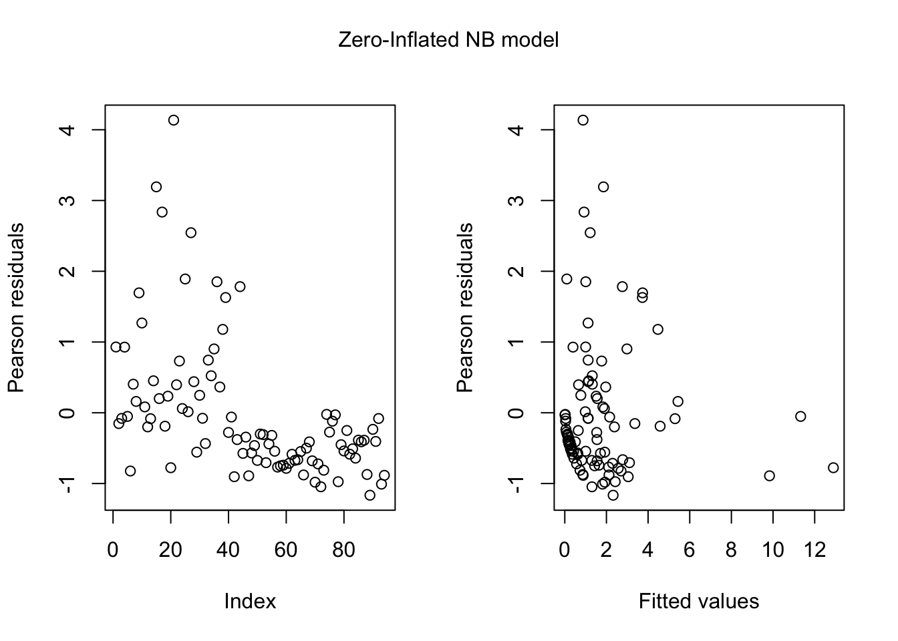
par(mfrow = c(1, 1))
rootogram(zinb_int4)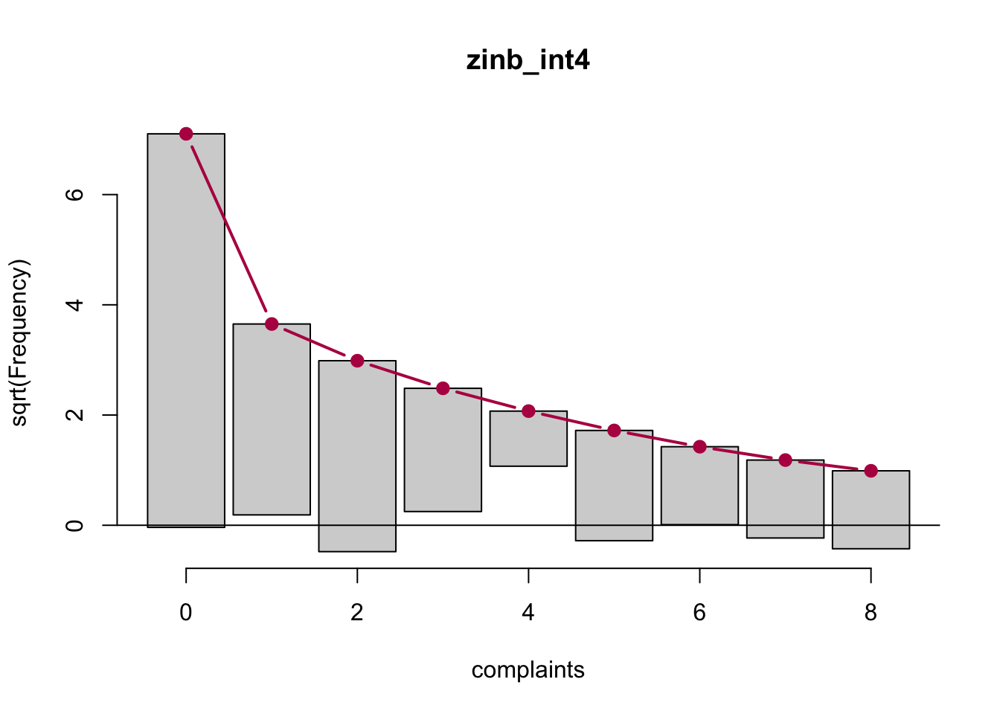
Rootogram
The rootogram shows how closely our model’s predictions match the
observed number of complaints. The zero counts are modeled exceptionally
well, which is crucial because accurately capturing the frequency of
zeros is the primary goal of a zero-inflated model. From counts 1-8, the
observed and predicted frequencies closely align, demonstrating that the
model effectively captures the general pattern of the data.
Residual Plots
The residual plots help us assess if our model captures patterns
effectively. Most residuals are within an acceptable range (±2), with
only a few slightly higher values. This indicates the model generally
fits the data well. Although there seems to be a decreasing variability
(heteroscedasticity) as the predicted values increase, but is generally
acceptable in count data.
Our improved model provides detailed insights into what affects patient complaints about doctors, considering both why some doctors rarely get complaints (zero-inflation) and why some receive more (count model).
Count Model Insights
Patient Visits: Doctors who see more patients receive
significantly more complaints (p < 0.001).
Doctor’s Gender: Male doctors tend to receive more
complaints than female doctors (p = 0.015).
Interaction of Residency and Work Hours:
Non-resident doctors (experienced): More work hours
significantly increase complaints (p = 0.004).
Resident doctors: The opposite effect occurs—more hours
actually decrease complaints, possibly because extra hours contribute to
experience and better patient care.
Zero-inflation Model Insights
Residency: Resident doctors are significantly more
likely to have no complaints at all (p = 0.008), suggesting residency
status plays a crucial role.
Gender and Work Hours Interaction:
Female doctors: Increased working hours significantly
increase their likelihood of having no complaints (p = 0.036).
Male doctors: This benefit from additional hours is
significantly weaker, indicating differences in how workload impacts
complaint patterns by gender.